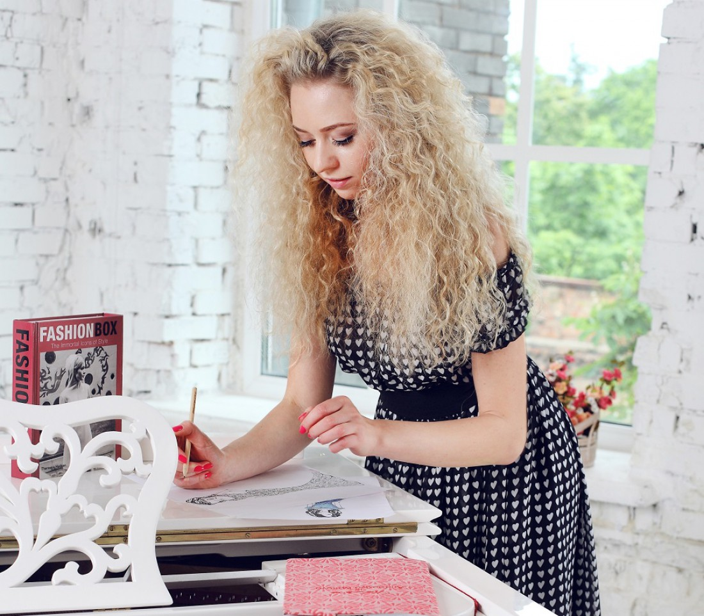

Своє перше ательє відкрила в 20 років. Анастасія має три вищі освіти. Закінчивши раніше найпрестижнішу школу дизайну в світі Instituto Marangoni Paris, зараз дизайнер вчиться в знаменитому Fashion Institute of Technology в Нью-Йорку, адже вважає, що найкраща інвестиція - це інвестиція в свою освіту і розвиток.
Ще в юному віці Анастасія знала про своє покликання, "Я вважаю себе щасливою людиною, адже завжди знала, ким хочу бути і бачила перед собою свою справжню мету! В цьому і є секрет мого успіху: я завжди слідувала своєї мрії, ніколи не звертала зі шляху і постійно розвивала себе як професіонала в сфері fashion ", - говорить Анастасія Іванова .